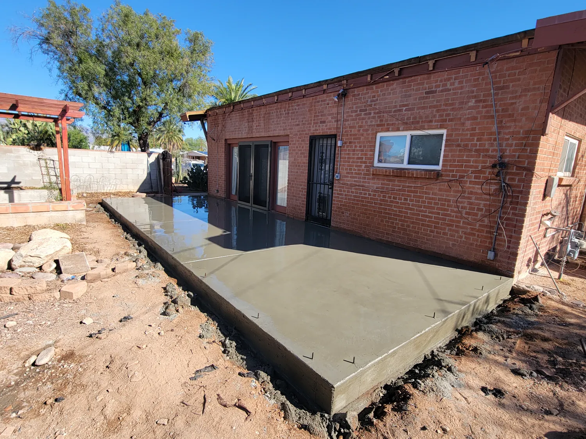
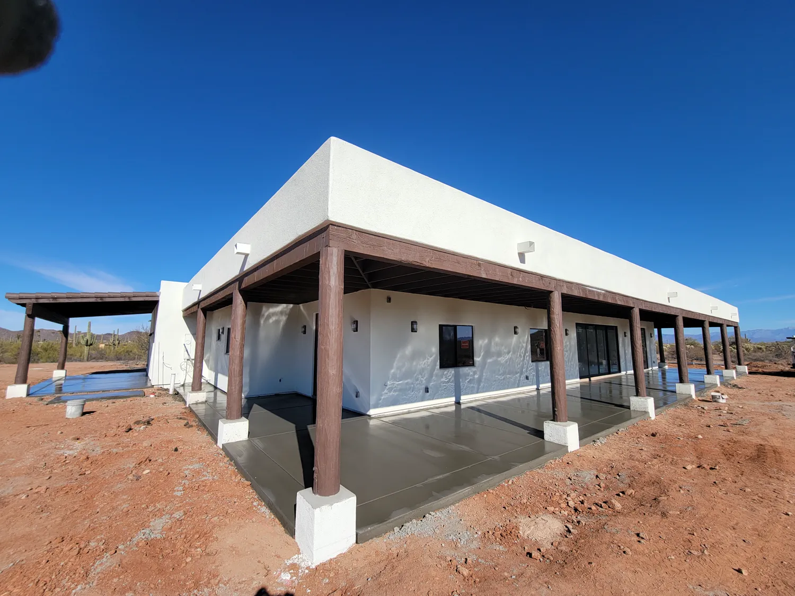

Concrete patio contractor in Tucson, AZ
In Tucson a patio is a second living room for most of the year. USM Construction LLC designs and installs custom concrete patios that fit your home's architecture and landscaping across Tucson and Pima County.

- Licensed, insured and bonded
- Free written estimates
- 4.9 stars from 18 reviews
What's included.
A patio has to drain away from the house and stay level where the furniture goes. We set slope for monsoon runoff, plan joints around your layout and choose a finish with grip and heat in mind.
- Custom concrete patio installation
- Sized and shaped to your home and landscaping
- Slope set for drainage away from the house
- Plain, colored or decorative finishes
- Joints placed to suit the layout
- Cure and walkthrough
How we do it.
-
Look at the site
We measure, check slope, access and drainage, and talk through finish and joint layout.
-
Prep and form
Strip and grade, compact the base, and set forms to line and level.
-
Pour and finish
Place, screed, float and finish with enough crew to keep up with the heat.
-
Cut joints and cure
Control joints go in at the right time, then the slab is cured before it takes load.
When to call us.
If any of these sound familiar, the sooner someone looks at it the cheaper it usually is to fix.
- You want to add a patio or extend an existing one
- Your current slab is cracked, sunken or stained
- You are planning a ramada, grill area or outdoor kitchen
- You want color or a stamped pattern
Recent work.

Patios questions.
What finish is best for a patio in the sun?
A broom finish gives grip. Lighter colors stay cooler under bare feet. We talk through the options for your yard.
Can the patio connect to my existing slab?
Often yes. We look at the existing slab and plan the joint between the two.
How long does it take?
Most patios are prepped and poured in a few days. The cure takes longer. We give you a schedule for your job.
Ready to build your patio?
Call us, or send the details and we'll call you to set up a free estimate.